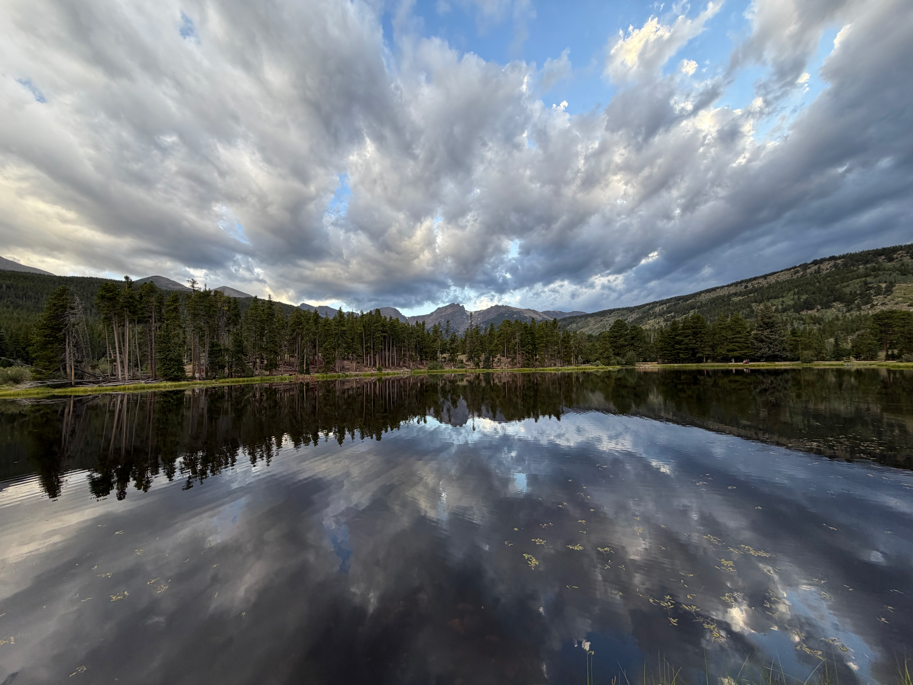
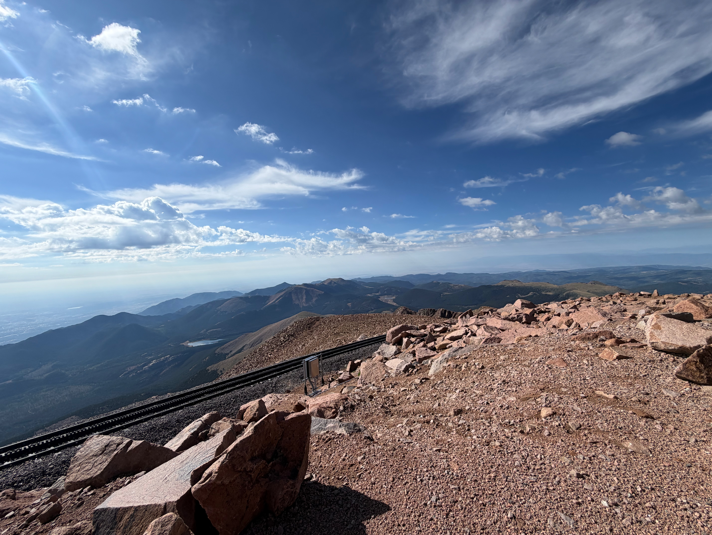

Yellowstone National Park
Wyoming · Waterfall and canyon
I chose this photo because the canyon walls make even a huge waterfall look small. It reminds me why I love stopping for a good view.
Six places that capture what I love about travel, from mountain hikes and waterfalls to live music outdoors.
Wyoming · Waterfall and canyon
I chose this photo because the canyon walls make even a huge waterfall look small. It reminds me why I love stopping for a good view.

Colorado · Mountain lake
I love how still the water looks in this photo. A view like this is one of my favorite reasons to get outdoors and slow down.

South Dakota · Black Hills
The low sun caught my eye as much as the sculpture. I picked this photo because I wanted to remember how the whole mountainside looked in that light.

Colorado Springs, Colorado · Red rock formations
I love the way the red rocks stand out above the trees. This is one of the views that made my Colorado trip memorable.

Colorado · Mountain hike
Hiking down Pikes Peak pushed me outside my comfort zone. It’s one of those trips I can look back on and feel proud of myself for doing.

Morrison, Colorado · Outdoor concert venue
Red Rocks was my first-ever concert, and I’m so glad I got to experience it there. We were in the fifth row, and between the music, the view, and getting to share it with someone special, it was one of the most amazing experiences I’ve ever had. I’d do it all over again in a heartbeat.